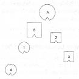
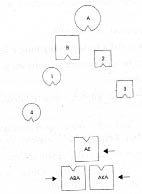
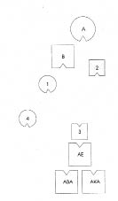
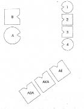
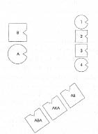

UTE Geçtiğimiz yarım saat içinde söylediklerinde kaldım ben. Çok heyecanlıyım. Suçla, kendini öldürmeyle ilgisi var hissettiklerimin ama tam olarak ifade edemiyorum. Annemin önünde yerlere kadar eğilmeyle de ilgisi var; bir şey beni bundan alıkoyuyor ama bunun ne olduğunu bilmiyorum.
HELLINGER Eğilmek seni mezardan çıkarırdı. -Başka bir şey var mı?
UTE Bilemiyorum. Böyle bir şey söylemen beni üzdü. Doğru olduğu noktayı bilmiyorum. Bütün söyleyebildiğim, beni üzdüğü. Elbette ölümle ilgisi olduğu için. Ağlar.
HELLINGER Bunu şimdilik böyle bırakıyorum.
Dizim: Dışlanmış büyük amca ve hor görülen amca
FRANK Ben Frank. Bert’i epey uzun zamandır tanıyorum. Eşimden ayrıldım, yirmi bir ve on dört yaşlarında iki çocuğum ve onlarla Tanrıya şükür çok iyi bir ilişkim var. Dagmar’la birlikte kendimize ait bir evde oturuyoruz. Fırtınalı yılların ardından çok daha huzurlu bir ilişki noktasına geldik. Psikoterapist olarak çok yoğun bir şekilde sistemik çalışmalar yürütüyorum. İnsanlarla çalışırken bazı şeylerin beni duygusal olarak fazlasıyla etkilediğini fark ediyor ve daha üzerinde durulması gereken şeyler olduğundan korkuyorum. Burada da bazı şeyler beni çok sarstı. Önce Robert’in, orada olma hakkı olmayan kız kardeşinin kaderi, sonra da olası savaş suçlusunun hikâyesi. Az önce o kadar titredim ki not alamaz oldum. Nasıl bir dinamiğin söz konusu olduğunu mutlaka ortaya çıkarmak zorundayım.
HELLINGER O halde diz. Bu kadar dinamiğin olduğu bir yerde hemen üzerine gitmek gerekir.
FRANK Benim söylemek istediğim, içinden geldiğim aile.
HELLINGER Doğru. Kimlerden oluşuyor ailen?
FRANK Babam, annem, kız kardeşim, ikinci çocuk olarak ben, küçük erkek kardeşim ve bir kız kardeş daha.
HELLINGER Ana babandan biri önceden bir evlilik, nişanlılık ya da ciddi bir ilişki yaşamış mı?
FRANK Hayır.
HELLINGER Başka bir eksik var mı?
FRANK Ailede dışlanmış kişiler var.
HELLINGER Çekirdek aileyle başlayalım. Daha sonra birisinin eksik olup olmadığına bakar, varsa onu da dahil ederiz.
1. Resim

B Baba
A Anne
1 İlk çocuk, kız
2 İkinci çocuk, erkek (=Frank)
3 Üçüncü çocuk, erkek
4 Dördüncü çocuk, kız
HELLINGER Burada olduğu gibi bir dizimde herkes bir yöne bakıyorsa önde birkaç kişi eksik demektir. Kime bakıyorlar? Önde durması gereken kim? Annenin ailesinde özel bir şey yaşanmış mı?
FRANK Büyükbabam Birinci Dünya Savaşında ölmüş, annem on iki yaşındaymış o zaman. Erkek kardeşinin ailenin günah keçisi olması da önemli.
HELLINGER Ne demek “günah keçisi”?
FRANK Birincisi eşcinselmiş - Kötüymüş bu da. Sonra beceriksizin teki gözüyle bakarlarmış ona -ailede bu da kötü bir şeymiş.
HELLINGER Onu da dizime katalım. Annenin ailesinde başka ne yaşanmış?
FRANK İki amcası başarısızlıkları nedeniyle Amerika’ya yollanmış. Biri içkiciymiş, başarısız bulunurmuş, diğeri de kimseye aldırmazmış.
HELLINGER Eksik olan, bu ikisi. Annenin erkek kardeşi onların temsilcisinden ibaret. İki amcayı oraya, ailenin önüne dizmek zorundayız. Annenin iki amcasının bu sistem için taşıdıkları önem, annenin davranışından değil, alınyazısından kaynaklanıyor. Amerika’ya gönderilmeleri, burada belirleyici olan.
FRANK Benim erkek kardeşim de Amerika’ya gitti.
Hellinger dışlanmış olanları dizime dahil eder.
2. Resim

AE Annenin erkek kardeşi
AKA Annenin küçük amcası
ABA Annenin büyük amcası
HELLINGER Babada ne değişti?
BABA Önce öyle boşluğa bakıyordum, oraya doğru çevrilmiştim. Şimdi orada sükûnet var, kararlılık. Artık burada kalabilirim.
HELLINGER Anne nasıl?
ANNE O üçünü tek bir gözümle görüyorum ama bütünüyle bakmak istiyorum.
HELLINGER Onları göreceğin şekilde dur.
ANNE Şimdi iyi.
HELLINGER En büyük çocukta böyle nasıl?
İLK ÇOCUK Çok daha iyi oldu böyle. Daha önce sanki bir tehlike gelebilirmiş gibi açıktı burası ve kendimi güruh tarafından öne sürülmüş gibi hissediyordum. Ön safta durmak zorundaydım. Şimdi öndeki amcalara doğru akıyor sempatim; onlarla kendimi iyi hissediyorum.
HELLINGER Frank’ın temsilcisine Böyle ikinci çocuk için nasıl?
İKİNCİ ÇOCUK Bunu cazip mi, korkutucu mu, nasıl bulacağımı henüz bilemiyorum.
HELLINGER Duygu nasıl? Ne değişti?
İKİNCİ ÇOCUK Beni daha fazla merkezimde kılıyor.
HELLINGER Duygu nasıl? Daha mı iyi daha mı kötü?
İKİNCİ ÇOCUK Daha iyi.
HELLINGER Amerika’ya gitmek isteyen küçük erkek kardeş nasıl?
ÜÇÜNCÜ ÇOCUK Ben daha önce gayet iyiydim. Arkadakilerden bir duygu almadım. Kendimi bağlı hissetmiyordum.
HELLINGER Seni hemen Amerika’ya yollayalım.
ÜÇÜNCÜ ÇOCUK Hemen giderim. Onlar orada dururken oraya gitmem gerektiğini açıkça anladım.
FRANK Erkek kardeşim sürekli akrabaları ziyarete gider, beni de peşinden sürüklemek ister.
Hellinger küçük erkek kardeşi dışlananlar grubuna ekler.
3. Resim

HELLINGER En küçük kız kardeş nasıl?
DÖRDÜNCÜ ÇOCUK Önümde birisi olmasından çok memnunum. Önceki dizimi çok kötü bulmuştum, arkamdaki aileyle hiçbir temasım yoktu çünkü. Kendimi oldukça yitik hissediyordum. Şimdi önümde birkaç kişi olmasına memnunum. Kendimi biraz arada kalmış hissediyorum ama böyle iyi.
HELLINGER Bu yalnızca bir hareket noktası, buradan ilerlemeye devam edeceğiz.
Frank’a Babanın ailesinde önemli bir olay var mı?
FRANK Babam nasyonal sosyalistti. Neler yaptığını tam olarak hiçbir zaman bilmedim. Ama büyük başlardan olmalıydı, çünkü silah altına almadılar.
HELLINGER Savaştan sonra mı içeri alındı?
FRANK İçeri alındı ve yıllar boyu kendisi ve Almanya’ya karşı işlenen haksızlıktan ötürü öfkeden köpürdü.
HELLINGER Dışlananların annenin görüş alanı içinde kalacakları, çocuklarınsa onları görmeyeceği şekilde düzeni kuruyorum şimdi.
4. Resim

HELLINGER Anne nasıl?
ANNE Burada, kocamın yanında iyiyim.
HELLINGER Baba nasıl?
BABA Benim için de öncekinden çok daha iyi.
HELLINGER Çocuklar nasıl?
HEPSİ İyi
HELLINGER Frank’a Kendi yerini almak ister misin şimdi? -Nasılsın orada?
FRANK İyi bir duygu burada böyle olmak.
HELLINGER Bu şimdi düzen. Dışlananlar görüş açısının dışında kalmakla birlikte takdir görüyor.
FRANK Benim hiç hoşuma gitmeyen, eşcinsel olan amcamın dışlanan diğerlerinin yanında olması, üçünün birlikte olması.
HELLINGER Kişi diğer nedenler yanında, dışlanan kötüyü temsil etmek zorunda olduğunda eşcinsel olur. Ve bu burada son derece tipik. Ağır bir alınyazısı ve sen buna müdahale edemezsin.
FRANK Evet. Bakışımızı geleceğe açık tutmak iyi olur belki.
HELLINGER Geleceğe nasıl bakılacağını sana göstereyim mi? Dört çocuk da arkalarını döner. Böylece ana babalarını arkalarına alırlar. Ana baba kalır, çocuklarsa gidebilir. Bu gelecektir. Ama daha önce ebeveyn rahatça biraz daha çocuklarına bakabilir.
5. Resim

HELLINGER Güzel. Hepsi bu. Sen yine de dizimi not et. Kimi zaman yardımı olur bunun.